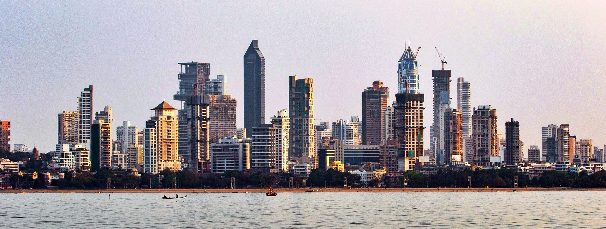
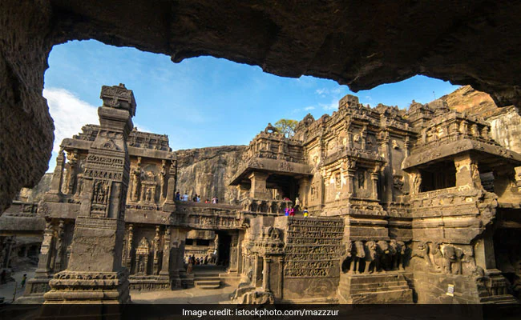

Places to Visit
Some of the most popular places to visit in Maharashtra are Mumbai, Ajanta Caves, Lonavala, Igatpuri, Diveagar, Panchgani, Ellora, Ganpatipule, Nasik, Vengurla, Tarkarli, Shirdi, Lavasa.

Mumbai - The bustling city of dreams

Ajanta Caves - UNESCO World Heritage Site

Lonavala - Lonavala is a romantic escape from the chaotic noise of city life